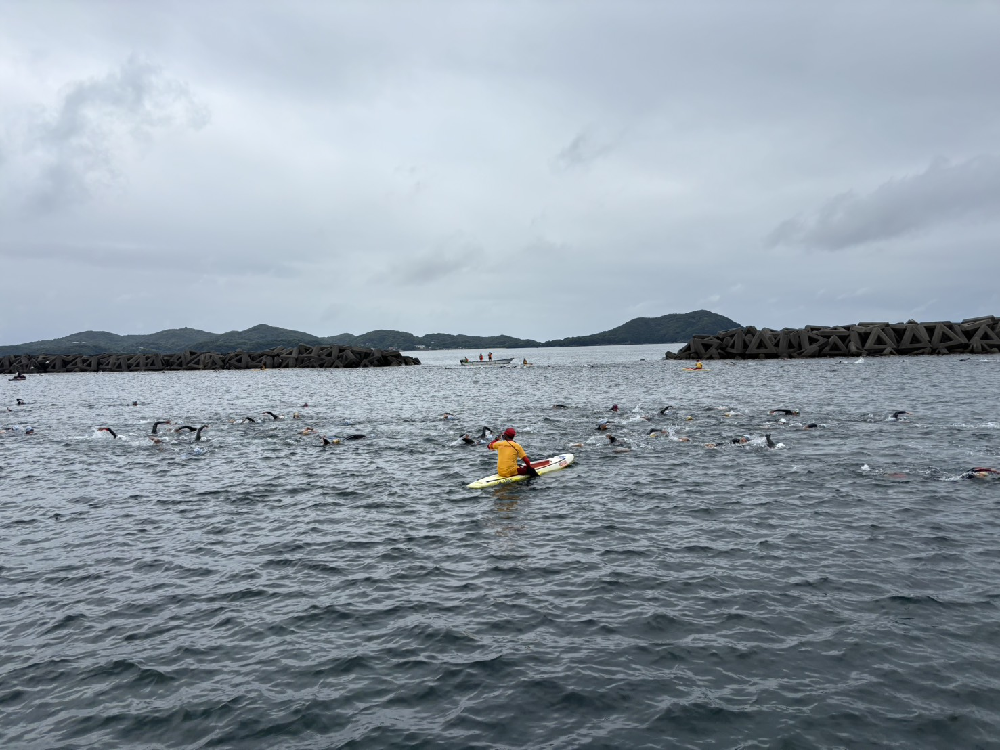
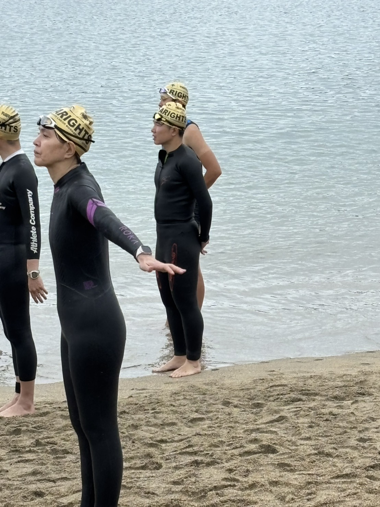
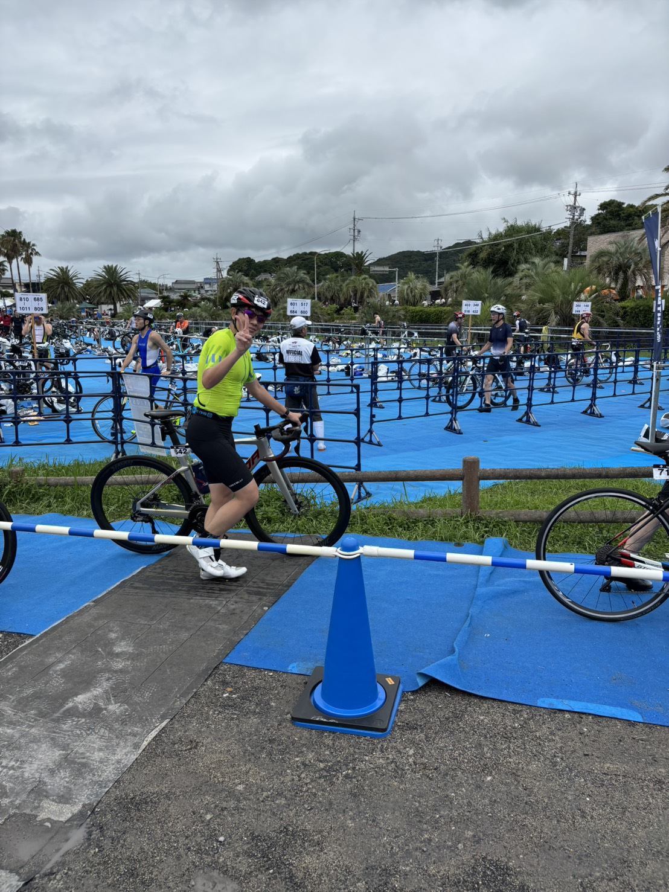

レース結果
大会概要

セクション別結果
| 区間 | タイム | 順位 |
|---|---|---|
| スイム 2km | 51分56秒 | 377位 |
| T1 | 6分35秒 | 328位 |
| バイク 45km | 1時間28分03秒 | 108位 |
| T2 | 4分48秒 | 441位 |
| ラン 10km | 42分15秒 | 15位 |
🏊 スイム

2kmを51分56秒で終了しました。 全体順位は377位で、 このレースでもスイムが大きな課題として残りました。
100m換算では約2分36秒です。 目標とするオリンピックディスタンスで 1500mを33〜35分にまとめるには、 泳力だけでなく、 方向確認、集団内での位置取り、 呼吸の安定、入水後のリズム作りを 改善する必要があります。
良かった点
2kmのスイムを終え、 その後のバイクとランまで競技を継続できました。
改善点
直進性、呼吸の安定、 左右差の修正、 100m単位での巡航ペース向上が必要です。
🔄 T1

T1は6分35秒でした。 スイム後の呼吸を整えながら、 ウェットスーツを脱ぎ、 ヘルメットやゼッケンを装着して バイクへ移動する区間です。
今後は用品の配置を固定し、 一連の動きを練習して、 判断せずに手順を進められる状態を目指します。
🚴 バイク
45kmを1時間28分03秒で走り、 セクション順位は108位でした。 スイムの377位から大きく順位を上げることができ、 バイクは現状でも競争力のある区間でした。
ただし、ODサブ2時間30分を目指す場合、 40kmを1時間10〜12分程度で走る必要があります。 今後はFTP向上だけでなく、 エアロポジションの維持、 コーナー後の再加速、 登りでの出力管理、 ランへ脚を残すペーシングが重要です。
良かった点
セクション108位まで順位を戻し、 スイムの遅れを大きく挽回できました。
改善点
40km換算でさらに時間を縮めるため、 FTP240Wから250Wへの向上と 巡航効率の改善が必要です。
🔄 T2
T2は4分48秒で、 セクション順位は441位でした。 今回の結果の中では、 最も改善余地が大きい区間の一つです。
バイク降車後の動線、 ランシューズへの履き替え、 ゼッケンや補給の確認を簡略化し、 迷いなくランへ移る必要があります。
🏃 ラン
10kmを42分15秒で走り、 セクション順位は15位でした。 得意種目としての強みを発揮できた区間です。
単純なラン能力だけでなく、 スイムとバイクを終えた状態でも 4分13秒/km前後でまとめられた点は、 今後サブ2時間30分を狙う上で大きな武器です。
良かった点
セクション15位。 バイク後でも大崩れせず、 得意なランで順位を上げられました。
改善点
目標の39〜40分に近づけるため、 バイクで脚を残しながら 序盤から安定して走る力を高めます。
レース全体の振り返り
総合タイムは3時間13分37秒。 スイムで大きく出遅れた一方、 バイクで順位を戻し、 ランでは15位まで上げるという 現在の特徴がはっきり表れたレースでした。
現時点では、 ランの強さに対して スイムとトランジションの損失が大きく、 総合タイムを押し上げています。
逆に言えば、 ランを無理に増やすより、 スイム、バイク、トランジションを重点的に改善する方が、 ODサブ2時間30分へ効率よく近づけます。
OD換算で見た課題
今大会は スイム2km・バイク45km・ラン10km で、通常のオリンピックディスタンスより スイムとバイクが長いレースでした。
そのため総合タイムをそのまま ODの記録とは比較できません。 ただし区間順位を見ると、 改善の優先順位は明確です。
①スイム
②T1・T2
③バイクの巡航力
④ランは維持しつつ39〜40分へ